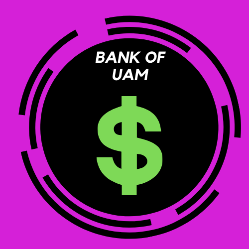

<ion-header>
  <ion-toolbar>
    <ion-buttons slot="start">
      <ion-back-button></ion-back-button>
    </ion-buttons>
    <ion-title>
      <center>Bank Of UAM</center>
    </ion-title>
  </ion-toolbar>


  


  <ion-content padding>
    <ion-button href="etapa1" (click)="btnClicked()" fill="outline" color="dark" expand="full">
      Solicitar Empréstimo
    </ion-button>
  </ion-content>